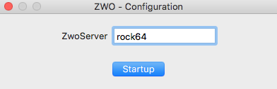
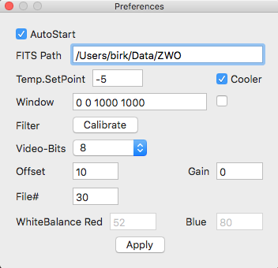

{kind=link}
News

- v0038 (2020-08-22)
- Fixed BZERO=32768 for the 16-bit camera.
- Download ZWOFinder.app.zip (deployment target macOS 10.12)
- v0037 (2020-08-21)
- Supports the ASI-6200MM camera (requires zwoserver-0023).
- v0030 (2019-07-23)
- Swap "R" and "B" channels of the RGB-data provided by the ZWO driver.
- v0029 (2019-07-19)
- ColorZWO: Write JPEG files to the same location as the FITS files (mono-chrome).
- ColorZWO: Add WhiteBalance settings to the Preferences window.
- Store the temperature control setpoint in Preferences.
- v0027 (2019-07-17)
- Required for zwoserver-v0015.
- v0026 (2019-07-16)
- Support color CCD cameras (eg. ASI290MC).
- v0025 (2019-05-09)
- Fixed the alignment of some controls when resizing the window.
- Restore image window settings after startup from the preferences.
- v0024 (2019-05-08)
- Moved the gain and offset controls to the Preferences window.
- They are also saved in the preferences file and re-stored at startup of the GUI.
- Added edit-controls for "OBJECT" and "COMMENT" FITS records.
- Moved the filter popup-button to the main GUI.
- Added a FileNumber edit control to the Preferences window.
- v0023 (2019-05-07)
- Added the 'FILTER' keyword to the FITS header.
- The filter names are set by the file
- ~/Library/Application Support/ZWOFinder/filters.xml
- That file can be found by selecting "File--Show_AppSupport" in the main menu.
- v0022 (2019-03-19)
- Handle camera without cooler.
- Select video quality (8/12 bit) on preferences window.
- v0021 (2019-02-27)
- Automatically restore the window geometry at startup.
- v0020 (2019-02-26)
- Send test-version to Povilas.
Screen Shots and Software Documentation
Configuration - GUI - Menu - PreferencesConfiguration
TODO
GUI
TODO
Menu
TODO
Preferences
TODO
Christoph C. Birk, 2018-11-16, Carnegie Observatories